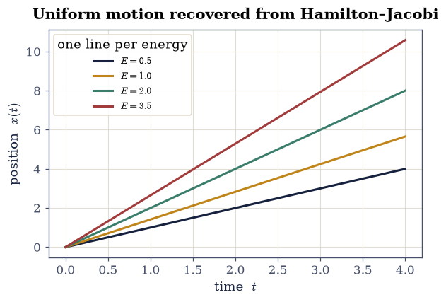
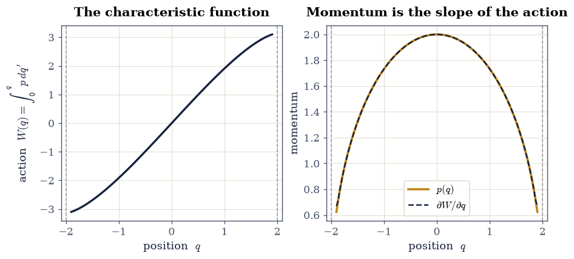
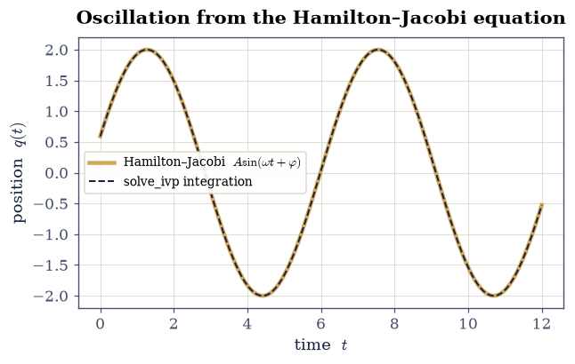
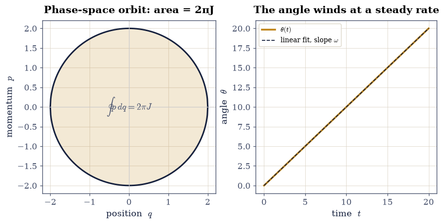
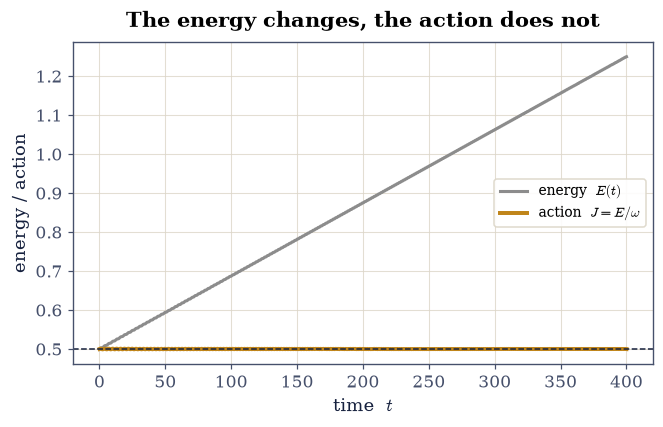
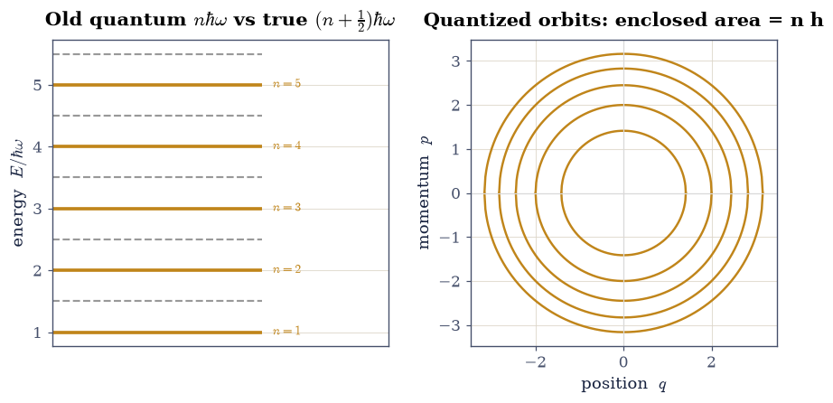
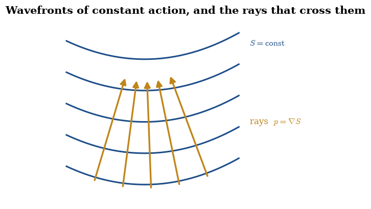

2.10 Hamilton–Jacobi Theory and Action-Angle Variables#
Notebook overview#
§2.1 built mechanics from a single scalar, the Lagrangian \(\mathcal L(q,\dot q,t)\); §2.3 traded velocity for momentum and recast the dynamics as an incompressible flow on phase space, governed by Hamilton’s equations and the Poisson bracket. This notebook completes that arc with its third and most powerful formulation. The idea is audacious: instead of solving the equations of motion, find a canonical transformation (the bracket- preserving maps of §2.3) so clever that in the new coordinates nothing moves — every new coordinate and momentum is a constant of the motion. The generating function that accomplishes this is Hamilton’s principal function \(S\), and the single first-order partial differential equation it must satisfy is the Hamilton–Jacobi equation. Solving that one equation solves the mechanics.
The reward is not merely another route to the same trajectories. \(S\) turns out to be the action \(\int p\,\mathrm dq\) we have met since §2.1, now promoted to the generator of the motion; its gradient is the momentum, and its level sets are wavefronts that the trajectories cross at right angles. For bounded motion the natural coordinates become action-angle variables: an action \(J=\frac1{2\pi}\oint p\,\mathrm dq\) that is constant, and an angle that winds at a steady frequency. The action variables label the invariant tori a trajectory wraps (the tori of §5.5), and they are adiabatic invariants — nearly conserved when the system is deformed slowly. Above all, \(S\) has the units and the role of a phase: if a particle is secretly a wave with phase \(S/\hbar\), then the Hamilton–Jacobi equation is exactly what the Schrödinger equation collapses into as the wavelength vanishes. That is the door through which Volume VI enters, and the Outlook of §2.3 already pointed at it.
We build a compact toolkit — Hamilton’s characteristic function by quadrature, the action variable as an enclosed phase-space area, the frequency read off as \(\partial H/\partial J\) — and put it to work on the free particle and the harmonic oscillator: recovering uniform motion and the oscillation from the Hamilton–Jacobi equation, computing the action and its frequency, watching the action survive a slow change that the energy does not, and finally quantizing the action the way the old quantum theory did, one step short of the correction that Volume VI’s WKB approximation (§6.23) supplies.
How to read the checks. Each exercise ends with a validation that compares a computed result to an expected physical fact. A ✗ does not by itself mean the physics is wrong: it means the output didn’t match what the check expected, which may be a real error, a different-but-valid convention (a sign, a unit, an array order), or simply too tight a tolerance. Treat a ✗ as a prompt to locate the discrepancy; passing is strong evidence of correctness, not proof.
Scope. This is a working review, not a textbook chapter. For Hamilton– Jacobi theory and action-angle variables in full — the separation of variables, the connection to canonical perturbation theory, and integrability — see Goldstein, Poole & Safko [GPS02] (ch. 10), Landau & Lifshitz, Mechanics [LL76] (§45–52), and Nolting, Theoretical Physics 2 [Nol16].
Theory in brief#
The Hamilton–Jacobi idea#
Seek a canonical transformation \((q,p)\mapsto(Q,P)\) — one of the bracket- preserving maps of §2.3 — whose new Hamiltonian \(K\) is identically zero. Then Hamilton’s equations in the new variables read \(\dot Q=\partial K/\partial P=0\) and \(\dot P=-\partial K/\partial Q=0\): every new coordinate and momentum is a constant. A type-2 generating function \(S(q,P,t)\) produces such a transformation with \(p=\partial S/\partial q\) and \(K=H+\partial S/\partial t\), so demanding \(K=0\) gives the Hamilton–Jacobi equation
one first-order PDE for Hamilton’s principal function \(S(q,t)\). Solving it solves the dynamics: the constant new coordinates and momenta are the integration constants, and inverting the relations \(\,\partial S/\partial P=Q=\text{const}\) returns \(q(t)\).
Separation for conserved systems#
When \(H\) has no explicit time dependence, \(S\) separates into a time piece and a space piece,
where \(E\) is the conserved energy and \(W(q)\) is Hamilton’s characteristic function. Because \(\partial W/\partial q = p\), the characteristic function is the action accumulated along the path,
the same \(\int p\,\mathrm dq\) that runs through all of mechanics, now serving as the generator of the motion. The momentum is literally the slope of the action.
Separation of variables and integrability#
For special systems the characteristic function splits into a sum of one- coordinate pieces, \(W=\sum_i W_i(q_i)\), turning the PDE Eq. 142 into ordinary integrals — the classical route to central-force and other symmetric problems (§2.4). A system with as many independent conserved actions as degrees of freedom is integrable, and its bounded motion lies on nested tori; most systems have no such separation, and their trajectories fill the energy surface ergodically (§5.5). Hamilton–Jacobi theory is thus also the sharp dividing line between the solvable and the chaotic.
Action-angle variables#
For bounded, periodic motion the most natural variables are action-angle variables. The action is the phase-space area enclosed by one orbit, divided by \(2\pi\),
a constant of the motion, and its conjugate angle \(\theta\) advances linearly in time at the frequency \(\omega=\partial H/\partial J\). In these coordinates the dynamics is trivial: \(J\) fixed, \(\theta\) winding at a steady rate. For the harmonic oscillator \(J=E/\omega\) and \(H(J)=\omega J\), so \(\partial H/\partial J=\omega\) recovers the frequency. The action variables label the invariant tori (§5.5) and are adiabatic invariants: when a parameter is changed slowly, \(J\) is nearly conserved even though \(E\) is not — the pendulum whose length is slowly drawn up keeps its action, not its energy.
The action as a phase — the seam to quantum mechanics#
Hamilton–Jacobi theory casts mechanics around the action \(S\), and \(S/\hbar\) is dimensionless: \(S\) has the units and the role of a phase. This is no accident. If a particle is secretly a wave, \(\psi\sim e^{iS/\hbar}\), then substituting into the Schrödinger equation and letting \(\hbar\to 0\) returns exactly the Hamilton–Jacobi equation Eq. 142:
Classical mechanics is the short-wavelength limit of wave mechanics, and Hamilton–Jacobi theory is the classical shadow of the Schrödinger equation. The action variables are what the old quantum theory quantized: \(\oint p\,\mathrm dq = n h\). Volume VI’s WKB approximation (§6.23) keeps \(\hbar\) small but nonzero, sharpens this to \(\oint p\,\mathrm dq=(n+\tfrac12)h\), and turns the action we compute here into the phase of a real wave.
Setup#
We work in one degree of freedom with units \(m=1\) throughout (and, where a frequency appears, \(\omega=1\) unless stated); for the quantization exercise we also set \(\hbar=1\), so an energy is measured in units of \(\hbar\omega\). The helpers below are the reusable core, each naming the SciPy operation it leans on:
momentum(q, E, V, m): the classical momentum \(p(q)=\sqrt{2m[E-V(q)]}\) in the allowed region (clipped to zero outside).classical_turning_points(E, V, search, m): the points \(V(q)=E\) where \(p\to 0\), located by sign changes plusscipy.optimize.brentq.characteristic_function(q, E, V, m): Hamilton’s characteristic function \(W(q)=\int_0^q p\,\mathrm dq'\) from Eq. 144, byscipy.integrate.quad.action_variable(E, V, search, m): the action \(J=\frac1{2\pi}\oint p\,\mathrm dq\) from Eq. 145, evaluated as \(\frac1\pi\int_{q_1}^{q_2} p\,\mathrm dq\) between the turning points (againquad).frequency_from_action(E, V, search, m): the frequency \(\omega=\partial H/\partial J=(\partial J/\partial E)^{-1}\), by a central difference of the action.
import numpy as np
from scipy.integrate import quad, solve_ivp
from scipy.optimize import brentq
import matplotlib.pyplot as plt
from ecp import draw, validate
def momentum(q, E, V, m=1.0):
"""Classical momentum p(q) = sqrt(2m·[E − V(q)]) in the allowed region.
Outside the turning points (V > E) the argument is clipped to zero, so the
function is real everywhere and vanishes at the turning points.
Parameters
----------
q : float or numpy.ndarray
Position(s).
E : float
Energy.
V : callable
Potential ``V(q)``; must accept the same shape as ``q``.
m : float, optional
Mass (default 1).
Returns
-------
float or numpy.ndarray
The momentum p(q).
"""
return np.sqrt(np.clip(2.0 * m * (E - V(q)), 0.0, None))
def classical_turning_points(E, V, search, m=1.0, n=2001):
"""Turning points where V(q) = E, via sign changes + ``scipy.optimize.brentq``.
Scans ``search=(qmin, qmax)`` for sign changes of V(q) − E and refines each
bracket with Brent's method. These are the points where the momentum
(eq-char-action) vanishes and WKB (6.23) will break down.
Parameters
----------
E : float
Energy.
V : callable
Potential.
search : tuple of float
``(qmin, qmax)`` window to scan.
m : float, optional
Mass (unused in the root, kept for a uniform signature).
n : int, optional
Number of scan points.
Returns
-------
numpy.ndarray
The sorted turning points found in the window.
"""
qs = np.linspace(search[0], search[1], n)
f = V(qs) - E
roots = []
for i in range(len(qs) - 1):
if f[i] == 0.0:
roots.append(qs[i])
elif f[i] * f[i + 1] < 0.0:
roots.append(brentq(lambda q: V(q) - E, qs[i], qs[i + 1]))
return np.array(roots)
def characteristic_function(q, E, V, m=1.0, q0=0.0):
"""Hamilton's characteristic function W(q): the integral of p from q0 to q.
Integrates the momentum (eq-char-action in the theory section) from ``q0``
to ``q`` with ``scipy.integrate.quad``. Its derivative is the momentum,
∂W/∂q = p.
Parameters
----------
q : float
Upper limit.
E : float
Energy.
V : callable
Potential.
m : float, optional
Mass.
q0 : float, optional
Lower limit (default 0).
Returns
-------
float
W(q).
"""
val, _ = quad(lambda s: momentum(s, E, V, m), q0, q)
return val
def action_variable(E, V, search, m=1.0):
"""Action variable J = (1/2π)·∮p dq (eq-action-angle).
For libration between two turning points the loop integral is twice the
integral across the well, so J = (1/π)·(integral of p from q1 to q2),
evaluated with ``scipy.integrate.quad``.
Parameters
----------
E : float
Energy.
V : callable
Potential.
search : tuple of float
Window passed to `classical_turning_points`.
m : float, optional
Mass.
Returns
-------
float
The action J.
"""
tp = classical_turning_points(E, V, search, m)
q1, q2 = tp[0], tp[-1]
half, _ = quad(lambda s: momentum(s, E, V, m), q1, q2)
return half / np.pi # (1/2pi) * (2 * half-loop)
def frequency_from_action(E, V, search, m=1.0, dE=1e-4):
"""Frequency ω = ∂H/∂J = 1/(∂J/∂E).
Uses the fact that H(J) inverts J(E), so ∂H/∂J = 1/(∂J/∂E); the derivative
is a central difference of `action_variable`.
Parameters
----------
E : float
Energy.
V : callable
Potential.
search : tuple of float
Window passed to `action_variable`.
m : float, optional
Mass.
dE : float, optional
Energy step for the finite difference.
Returns
-------
float
The frequency ω.
"""
Jp = action_variable(E + dE, V, search, m)
Jm = action_variable(E - dE, V, search, m)
return (2.0 * dE) / (Jp - Jm)
Exercise 1 — The Hamilton–Jacobi equation for the free particle (worked)#
The simplest possible case fixes the ideas. For a free particle \(H=p^2/2m\), the Hamilton–Jacobi equation Eq. 142 reads \(\tfrac1{2m}(\partial S/\partial x)^2+\partial S/\partial t=0\). With no potential the energy is conserved, so we separate \(S=W(x)-Et\) from Eq. 143; the space equation \(\tfrac1{2m}(W')^2=E\) integrates to \(W=\sqrt{2mE}\,x\), and the whole principal function is \(S=\sqrt{2mE}\,x-Et\). The motion then falls out of the rule that the new coordinate \(\partial S/\partial E\) is a constant. We verify both the equation and the motion it implies, using SymPy so the algebra is exact. The recovered straight-line trajectories are drawn in Fig. 146.
Form \(S=\sqrt{2mE}\,x-Et\) (
sympy) and confirm it satisfies the Hamilton–Jacobi equation Eq. 142 identically.Impose \(\partial S/\partial E=\text{const}\) and solve for \(x(t)\) (
sympy.solve); confirm it is uniform motion with velocity \(\sqrt{2E/m}=p/m\).
HJ residual (S_x)^2/2m + S_t = 0
x(t) = sqrt(2)*sqrt(E)*(beta + t)/sqrt(m)
dx/dt = sqrt(2)*sqrt(E)/sqrt(m) sqrt(2E/m) = sqrt(2)*sqrt(E)/sqrt(m)
findfont: Failed to find font weight 600, now using 700.

Fig. 146 Free-particle trajectories recovered from the Hamilton–Jacobi equation. Separating \(S=\sqrt{2mE}\,x-Et\) and setting the new coordinate \(\partial S/\partial E\) to a constant gives \(x(t)=\sqrt{2E/m}\,(t+\beta)\) — uniform motion, one straight line per energy \(E\) (higher \(E\), steeper slope). The Hamilton–Jacobi equation reproduces the most elementary motion of all, and the constant \(\beta\) labels which particle.#
Validation 1 — the free-particle Hamilton–Jacobi solution#
The residual of Eq. 142 must vanish identically, and the recovered velocity must equal \(\sqrt{2E/m}\), i.e. \(p/m\): the Hamilton–Jacobi solution reproduces free uniform motion.
✓ S = √(2mE)x − Et satisfies the Hamilton–Jacobi equation (S_x)²/2m + S_t = 0
✓ ∂S/∂E = const gives uniform motion with velocity √(2E/m) = p/m
True
Exercise 2 — Hamilton’s characteristic function and the momentum (worked)#
The heart of Eq. 143 is that the momentum is the slope of the
action: \(\partial W/\partial q=p\). We test this directly. Take the harmonic
well \(V(q)=\tfrac12 m\omega^2q^2\) (with \(m=\omega=1\)) at a fixed energy \(E\),
build \(W(q)=\int_0^q p\,\mathrm dq'\) by quadrature with characteristic_function,
and check that its derivative reproduces the momentum \(p(q)=\sqrt{2m[E-V(q)]}\).
Because \(W\) is an integral, we read its slope with a central difference rather
than by differentiating the quadrature symbolically. The action and its slope
are shown in Fig. 147.
For the oscillator at energy \(E\), compute \(W(q)\) on a grid inside the turning points with
characteristic_function(scipy.integrate.quad).Confirm \(\partial W/\partial q=p(q)\) at several interior points by a central difference of \(W\), comparing against
momentum.
turning point A = 2.0
dW/dq : [1.6 1.907878 1.907878 1.6 ]
p(q) : [1.6 1.907878 1.907878 1.6 ]
max |dW/dq − p| = 1.7603563051693527e-10

Fig. 147 Hamilton’s characteristic function \(W(q)=\int_0^q p\,\mathrm dq'\) for the harmonic well at fixed energy (left), and its slope against the momentum \(p(q)=\sqrt{2m[E-V]}\) (right). The momentum is exactly the slope of the action, \(\partial W/\partial q=p\) — the content of the separated Hamilton–Jacobi equation — and both vanish at the turning points \(q=\pm A\) (dashed) where the classical motion reverses.#
Validation 2 — the momentum is the slope of the action#
At interior points (away from the turning points, where the square-root slope diverges and a finite difference degrades) the central-difference slope of \(W\) must match \(p(q)\) to high accuracy: this is \(\partial W/\partial q=p\), the defining property Eq. 144 of the characteristic function.
✓ ∂W/∂q = p(q): the momentum is the slope of Hamilton's characteristic function [max|Δ| = 1.76036e-10 (rtol=1e-05, atol=1e-06)]
True
Exercise 3 — The harmonic oscillator by Hamilton–Jacobi (worked)#
Now the full machine on the oscillator. With \(W(q)=\int p\,\mathrm dq\) in hand, the trajectory comes from the same rule as before: the new coordinate \(\partial W/\partial E - t\) is a constant. Working the integral analytically, \(\partial W/\partial E=\int \frac{\partial p}{\partial E}\,\mathrm dq=\frac1\omega\arcsin(q/A)\), so setting \(\partial W/\partial E-t=\text{const}\) gives \(\arcsin(q/A)=\omega t+\varphi\), i.e. \(q(t)=A\sin(\omega t+\varphi)\) — simple harmonic motion, straight from the Hamilton–Jacobi equation. We confirm it against a direct numerical integration of Hamilton’s equations (Fig. 148).
Assemble the Hamilton–Jacobi solution \(q(t)=A\sin(\omega t+\varphi)\) with \(A=\sqrt{2E/(m\omega^2)}\).
Integrate Hamilton’s equations \(\dot q=p/m,\ \dot p=-m\omega^2q\) with
scipy.integrate.solve_ivp(DOP853) from the matching initial state, and confirm the two \(q(t)\) agree.
max |q_HJ − q_numeric| = 3.019806626980426e-11

Fig. 148 The oscillator solved by Hamilton–Jacobi. Setting the new coordinate \(\partial W/\partial E-t\) to a constant yields \(q(t)=A\sin(\omega t+\varphi)\) analytically (solid); a direct solve_ivp integration of Hamilton’s equations from the same initial state (dashed) lies on top of it. The Hamilton–Jacobi equation delivers the oscillation without ever writing down \(\ddot q=-\omega^2 q\).#
Validation 3 — Hamilton–Jacobi reproduces the oscillation#
The analytic Hamilton–Jacobi trajectory and the numerically integrated one are the same physics by two routes, so they must agree to integration tolerance.
✓ q(t) = A sin(ωt+φ) from Hamilton–Jacobi matches the integrated motion [max|Δ| = 3.01981e-11 (rtol=1e-06, atol=1e-07)]
True
Exercise 4 — Action-angle variables for the oscillator (worked; the centerpiece)#
Here is the payoff. For bounded motion the action \(J=\frac1{2\pi}\oint
p\,\mathrm dq\) from Eq. 145 is the enclosed phase-space area over
\(2\pi\), and it is a constant of the motion; its conjugate angle advances
linearly at the frequency \(\omega=\partial H/\partial J\). For the oscillator the
orbit \(p^2/2m+\tfrac12 m\omega^2q^2=E\) is an ellipse of area \(2\pi E/\omega\), so
\(J=E/\omega\) and \(H(J)=\omega J\) — whence \(\partial H/\partial J=\omega\). We
compute the action by quadrature with action_variable, read the frequency from
frequency_from_action, and confirm the angle winds at a steady rate
(Fig. 149).
Compute \(J=\frac1{2\pi}\oint p\,\mathrm dq\) with
action_variable(scipy.integrate.quadbetween the turning points) and confirm \(J=E/\omega\).Read \(\omega=\partial H/\partial J\) from
frequency_from_actionand confirm it equals the oscillation frequency.From an integrated orbit, form the angle \(\theta=\operatorname{atan2}(-p/m\omega,\,q)\) (
numpy.arctan2+numpy.unwrap) and confirm it advances linearly at rate \(\omega\) (numpy.polyfit).
J = (1/2π)∮p dq = 2.000000 E/ω = 2.000000
∂H/∂J = 1.000000 ω = 1.000000
dθ/dt (linear fit) = 1.000000 ω = 1.000000

Fig. 149 Action-angle variables for the oscillator. Left: the phase-space orbit at energy \(E\) encloses an area \(\oint p\,\mathrm dq=2\pi J\) (shaded); with \(m=\omega=1\) the orbit is a circle of radius \(\sqrt{2E}\), and \(J=E/\omega\). Right: the angle variable \(\theta=\operatorname{atan2}(-p/m\omega,\,q)\) advances perfectly linearly in time at the rate \(\omega=\partial H/\partial J\). In these coordinates the motion is trivial — a constant action and an angle winding at a steady frequency.#
Validation 4 — the action is E/ω and its frequency is ω#
Three facts must hold together: the quadrature action equals \(E/\omega\); the derivative \(\partial H/\partial J\) equals the oscillation frequency \(\omega\); and the angle variable advances linearly at that same \(\omega\). Together they are the statement that action-angle variables trivialize the oscillator.
✓ J = (1/2π)∮p dq equals E/ω for the oscillator [got 2 vs expected 2 (rtol=1e-05)]
✓ ∂H/∂J recovers the oscillation frequency ω [got 1 vs expected 1 (rtol=0.0001)]
✓ the angle variable advances linearly at rate ω [got 1 vs expected 1 (rtol=0.0001)]
True
Exercise 5 — Adiabatic invariance (student-implemented)#
The action earns its importance from what it does under change. Take an oscillator whose frequency \(\omega(t)\) is drawn slowly upward — slowly meaning over many periods — and ask what survives. The energy does not: pump the spring stiffer and the oscillation gains energy. But the action \(J=E/\omega\) is an adiabatic invariant: it is nearly conserved, to a degree that improves the more slowly the change is made. This is the classical root of the adiabatic theorem, and of the old quantum theory’s faith that quantized actions stay quantized as atoms are perturbed. Here the ensemble and its evolution are set up for you; you assemble the diagnostic \(J(t)=E(t)/\omega(t)\) and read the result.
Integrate the oscillator with a slowly ramped frequency \(\omega(t)\) using
scipy.integrate.solve_ivp(DOP853) over the whole ramp.Form the instantaneous energy \(E(t)=\tfrac12 p^2/m+\tfrac12 m\omega(t)^2q^2\) and the action \(J(t)=E(t)/\omega(t)\).
Show that \(E\) changes by the ratio \(\omega_1/\omega_0\) while \(J\) stays nearly constant.
E: 0.5000 → 1.2497 (ratio 2.499, expect ω1/ω0 = 2.500)
J: 0.5000 → 0.4999 (relative drift 3.71e-03)

Fig. 150 Adiabatic invariance of the action. As the oscillator frequency is ramped slowly from \(\omega_0\) to \(\omega_1\), the energy \(E(t)\) (grey) climbs by the full factor \(\omega_1/\omega_0\), but the action \(J=E/\omega\) (amber) stays flat to a fraction of a percent. The action is the robust invariant under slow change — the classical seed of the adiabatic theorem, and the reason the old quantum theory could quantize \(J\) and trust it to persist.#
Validation 5 — the action survives the slow change#
Adiabatic invariance is not exact — it holds in the limit of infinitely slow change — so the honest check is that \(J\) drifts by far less than \(E\) does. With this ramp \(E\) moves by a factor of \(2.5\) while \(J\) holds to about a percent.
✓ the action J = E/ω is an adiabatic invariant under the slow frequency ramp [max relative drift = 0.00187367 (limit 0.02)]
✓ meanwhile the energy E changes by the ramp ratio ω1/ω0 ≈ 2.5 (not conserved)
True
Exercise 6 — Toward quantization: the action and Bohr–Sommerfeld (student-implemented)#
The old quantum theory of Bohr and Sommerfeld made one bold postulate: that the action variable is quantized, \(\oint p\,\mathrm dq=n h\) with \(n=1,2,\dots\) For the oscillator \(\oint p\,\mathrm dq=2\pi E/\omega\), so the rule gives \(E_n=n\hbar\omega\) — the correct ladder spacing \(\hbar\omega\), but resting on the floor instead of half a rung above it. The missing \(\tfrac12\) is the zero-point energy, and it is exactly what Volume VI’s WKB approximation (§6.23) restores by tracking the phase the wave picks up at the turning points, sharpening the rule to \(\oint p\,\mathrm dq=(n+\tfrac12)h\). You quantize the action and compare the two ladders (Fig. 151).
For the oscillator, evaluate \(\oint p\,\mathrm dq=2\pi J\) with
action_variableat a trial energy and confirm it equals \(2\pi E/\omega\).Impose \(\oint p\,\mathrm dq=n h\) (with \(\hbar=1\), \(h=2\pi\)) and solve for \(E_n\); confirm \(E_n=n\hbar\omega\).
Note the old-quantum ladder \(n\hbar\omega\) against the true \((n+\tfrac12)\hbar\omega\) — the correction WKB will supply.
∮p dq = 12.566371 2πE/ω = 12.566371
Bohr–Sommerfeld E_n = n ħω : [1. 2. 3. 4. 5.]
true (n+½)ħω : [1.5 2.5 3.5 4.5 5.5]
findfont: Failed to find font weight 600, now using 700.

Fig. 151 The old quantum theory in phase space. Imposing \(\oint p\,\mathrm dq=nh\) selects a discrete set of oscillator orbits (amber) whose enclosed areas are integer multiples of Planck’s constant; their energies are \(E_n=n\hbar\omega\) (left, amber ladder). This has the right spacing but sits half a rung too low: the true spectrum is \((n+\tfrac12)\hbar\omega\) (grey), and the missing zero-point \(\tfrac12\hbar\omega\) is the turning-point correction that WKB (§6.23) supplies.#
Validation 6 — the old quantization gives Eₙ = nℏω#
The action quantized as \(\oint p\,\mathrm dq=n h\) must return the oscillator ladder \(E_n=n\hbar\omega\): the right spacing \(\hbar\omega\), short by the zero-point \(\tfrac12\hbar\omega\) that WKB (§6.23) will add.
✓ ∮p dq = 2πE/ω for the oscillator [got 12.5664 vs expected 12.5664 (rtol=1e-05)]
✓ Bohr–Sommerfeld ∮p dq = nh gives E_n = nℏω (old quantum theory) [max|Δ| = 0 (rtol=1e-06, atol=1e-09)]
True
Exercise 7 — (Synthesis) The action as the shadow of a wave#
Hamilton–Jacobi theory set out to find a change of variables that would freeze the motion into constants, and found it in the classical action — a single function \(S\) whose gradient is the momentum, whose level sets \(S=\text{const}\) are wavefronts, and whose invariant tori the action variables label. Along the way the action revealed itself as the robust survivor of slow change (the adiabatic invariant of Exercise 5) and as the quantity the old quantum theory quantized (Exercise 6). But its deepest property is the one in its units. The action carries the dimensions of \(\hbar\), which is to say the dimensions of a phase, and the equation it obeys is precisely what the Schrödinger equation becomes when the wavelength shrinks to nothing, Eq. 146.
Fig. 152 draws the picture that Volume VI makes literal. Surfaces of constant action are wavefronts; the momentum \(p=\nabla S\) points along the rays that cross them at right angles — the classical trajectories. A particle following Hamilton’s equations is a ray of a wave whose phase is \(S/\hbar\), and geometrical optics is to wave optics exactly as classical mechanics is to quantum mechanics. Hamilton wrote his equation in the 1830s, decades before anyone suspected the electron was a wave, yet he built mechanics in the language of phases and wavefronts — as if the theory knew, before we did, what it would one day become. Volume VI picks up exactly here: it lets \(\hbar\) be small but nonzero, and the action we computed in this notebook becomes the phase of a real matter wave. That is the WKB approximation (§6.23), and the Bohr–Sommerfeld rule of Exercise 6 returns with its missing \(\tfrac12\) restored.

Fig. 152 The action as a wave’s phase. Surfaces of constant action \(S=\text{const}\) (blue) are wavefronts; the momentum \(p=\nabla S\) points along the rays (amber) that cross them orthogonally — the classical trajectories. Hamilton–Jacobi theory is geometrical optics for matter: a particle is a ray of a wave with phase \(S/\hbar\), and letting \(\hbar\) be small-but-nonzero (Volume VI, §6.23) turns this classical shadow back into a real wave.#
Notebook summary#
The Hamilton–Jacobi equation Eq. 142 seeks a canonical transformation to constants; its generator is the action \(S=W-Et\) Eq. 143, with the momentum as its slope, \(\partial W/\partial q=p\). We recovered free uniform motion and the full oscillation from it.
Action-angle variables Eq. 145: the action \(J=\frac1{2\pi}\oint p\,\mathrm dq=E/\omega\) is constant and the angle winds at \(\omega=\partial H/\partial J\) (verified three ways for the oscillator).
Adiabatic invariance: under a slow frequency ramp the energy changed by \(2.5\times\) while the action held to about a percent — the robust invariant.
The old quantization \(\oint p\,\mathrm dq=nh\) gave \(E_n=n\hbar\omega\), the right spacing missing its zero-point \(\tfrac12\hbar\omega\).
The action is a phase: \(S=\text{const}\) are wavefronts, \(p=\nabla S\) the rays, and the Hamilton–Jacobi equation is the \(\hbar\to0\) limit of Schrödinger Eq. 146 — the bridge to Volume VI.
Outlook#
The WKB / semiclassical approximation (Volume VI, §6.23): \(\psi\sim e^{iS/\hbar}\) with \(S\) the very action computed here, and Bohr–Sommerfeld sharpened to \((n+\tfrac12)h\) by the turning-point phases.
Wave mechanics (Volume VI): the Schrödinger equation whose short-wavelength limit is the Hamilton–Jacobi equation, and the position-space wavefunction (§6.9) whose phase is the action.
Integrable systems and chaos (§5.5): action variables label the invariant tori; when no separation exists the tori break and the motion turns ergodic — KAM theory as a horizon.
Canonical perturbation theory: expanding the action of a nearly-integrable system in the small perturbation, with action variables as the unperturbed coordinates.
References#
Herbert Goldstein, Charles P. Poole, and John L. Safko. Classical Mechanics. Pearson, 3 edition, 2002.
L. D. Landau and E. M. Lifshitz. Mechanics. Volume 1 of Course of Theoretical Physics. Butterworth–Heinemann, 3 edition, 1976.
Wolfgang Nolting. Theoretical Physics 2: Analytical Mechanics. Springer, 2016.